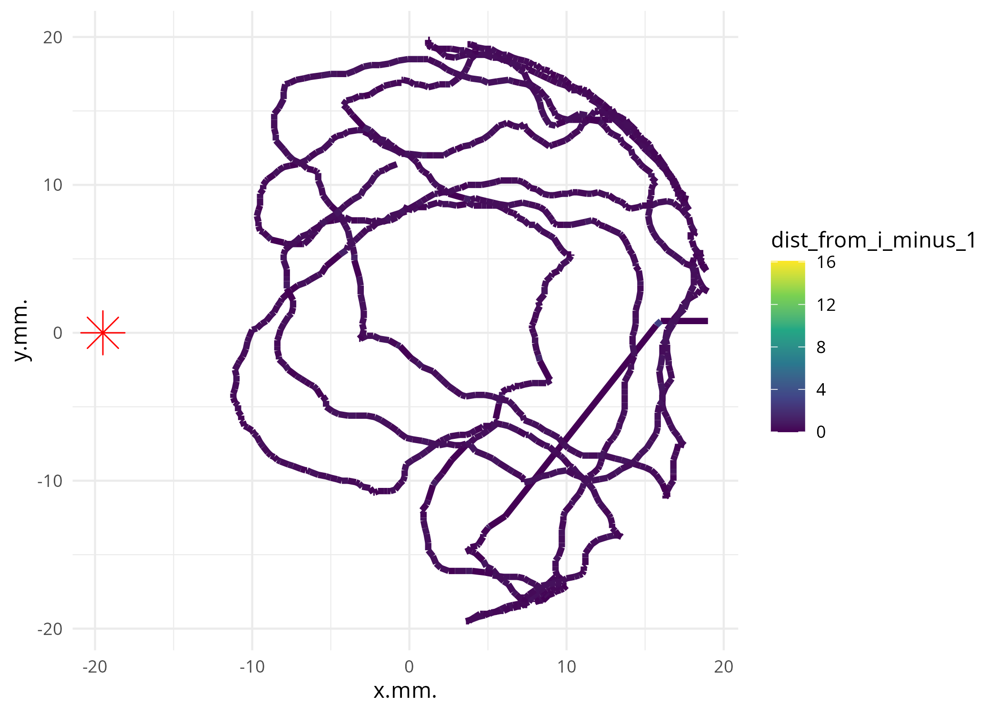

Getting Started with MiteMapTools
Adrien Taudière and Lise Roy
2025-09-23
getting-started.RmdIntroduction
MiteMapTools is a comprehensive R package for importing, analyzing, and visualizing movement data from MiteMap tracking systems. MiteMap is a cost-effective, open-source tool for 2D behavioral tracking of arthropods, particularly useful for studying chemotactic responses and movement patterns in controlled laboratory settings.
About MiteMap
MiteMap is a Raspberry Pi-based automated tracking system designed to monitor arthropod behavior in circular arenas. The system uses infrared imaging to track individual organisms with high temporal resolution (position recorded every 0.2 seconds) and spatial precision. This technology enables researchers to study:
- Chemotactic behavior: How arthropods respond to attractive or repulsive volatile compounds
-
Movement patterns: Analysis of trajectory
complexity, speed, and spatial preferences
- Zone preferences: Time allocation between different arena regions
- Behavioral states: Periods of activity vs. immobility
The system consists of a circular arena (typically 40mm diameter) where test subjects are placed with potential stimuli positioned at the arena periphery. High-resolution tracking data allows for detailed quantitative analysis of behavioral responses. The original MiteMap hardware and software can be found at: https://github.com/LR69/MiteMap/tree/MiteMap.v6
Scientific Background
This package implements methods described in:
Masier, L.‐S., Roy, L., & Durand, J.‐F. (2022). A new methodology for arthropod behavioral assays using MiteMap, a cost‐effective open‐source tool for 2D tracking. Journal of Experimental Zoology Part A: Ecological and Integrative Physiology, 337(4), 333-344. doi:10.1002/jez.2651
Installation
You can install the development version of MiteMapTools from GitHub with:
# install.packages("pak")
pak::pak("adrientaudiere/MiteMapTools")Basic Usage
Let’s start by loading the package and exploring the example dataset:
library(MiteMapTools)
#> Loading required package: tidyverse
#> ── Attaching core tidyverse packages ──────────────────────── tidyverse 2.0.0 ──
#> ✔ dplyr 1.1.4 ✔ readr 2.1.5
#> ✔ forcats 1.0.0 ✔ stringr 1.5.2
#> ✔ ggplot2 4.0.0 ✔ tibble 3.3.0
#> ✔ lubridate 1.9.4 ✔ tidyr 1.3.1
#> ✔ purrr 1.1.0
#> ── Conflicts ────────────────────────────────────────── tidyverse_conflicts() ──
#> ✖ dplyr::filter() masks stats::filter()
#> ✖ dplyr::lag() masks stats::lag()
#> ℹ Use the conflicted package (<http://conflicted.r-lib.org/>) to force all conflicts to become errors
#> Loading required package: readxl
#>
#> Loading required package: conflictedData Import and Basic Visualization
The main function for importing MiteMap data is
import_mitemap(). For this tutorial, we’ll use both the
built-in example dataset and demonstrate how to import data from
files.
Using Built-in Example Data
The package includes a pre-processed example dataset:
# Load the built-in example dataset
data(MM_data)
# Examine the structure of the data
head(MM_data)
#> # A tibble: 6 × 35
#> # Groups: File_name [1]
#> File_name X..t.s. x.mm. y.mm. Immobile..si..1. MiteID Well.Position Plate.name
#> <chr> <dbl> <dbl> <dbl> <dbl> <chr> <chr> <chr>
#> 1 MM012022… 2.2 19 0.8 1 SPT01… NA ""
#> 2 MM012022… 2.4 19 0.8 1 SPT01… NA ""
#> 3 MM012022… 2.6 19 0.8 1 SPT01… NA ""
#> 4 MM012022… 2.8 19 0.8 1 SPT01… NA ""
#> 5 MM012022… 3 19 0.8 1 SPT01… NA ""
#> 6 MM012022… 3.2 19 0.8 1 SPT01… NA ""
#> # ℹ 27 more variables: MiteID.1 <chr>, Run_no <chr>, Date <chr>, Hour <lgl>,
#> # MM <int>, Pop. <chr>, Treatment <chr>, Duration <int>, run <chr>,
#> # Biomol_sp <chr>, Haplotype <chr>, Morpho_sp <chr>, latitude <lgl>,
#> # longitude <lgl>, site <chr>, notes <chr>, distance_from_previous <dbl>,
#> # speed_mm_s <dbl>, is_immobile <lgl>, distance_from_sources <dbl>,
#> # in_left_half_HH <lgl>, in_left_half_CH <lgl>,
#> # turning_angle_clockwise <dbl>, turning_angle <dbl>, …
glimpse(MM_data)
#> Rows: 319,050
#> Columns: 35
#> Groups: File_name [226]
#> $ File_name <chr> "MM012022_05_17_08h23m05s", "MM012022_05_…
#> $ X..t.s. <dbl> 2.2, 2.4, 2.6, 2.8, 3.0, 3.2, 3.4, 3.6, 3…
#> $ x.mm. <dbl> 19.0, 19.0, 19.0, 19.0, 19.0, 19.0, 16.0,…
#> $ y.mm. <dbl> 0.8, 0.8, 0.8, 0.8, 0.8, 0.8, 0.8, 0.5, 0…
#> $ Immobile..si..1. <dbl> 1, 1, 1, 1, 1, 1, 0, 0, 1, 1, 1, 1, 1, 1,…
#> $ MiteID <chr> "SPT01_6", "SPT01_6", "SPT01_6", "SPT01_6…
#> $ Well.Position <chr> NA, NA, NA, NA, NA, NA, NA, NA, NA, NA, N…
#> $ Plate.name <chr> "", "", "", "", "", "", "", "", "", "", "…
#> $ MiteID.1 <chr> "SPT01_6", "SPT01_6", "SPT01_6", "SPT01_6…
#> $ Run_no <chr> "1a", "1a", "1a", "1a", "1a", "1a", "1a",…
#> $ Date <chr> "11-mars", "11-mars", "11-mars", "11-mars…
#> $ Hour <lgl> NA, NA, NA, NA, NA, NA, NA, NA, NA, NA, N…
#> $ MM <int> 10, 10, 10, 10, 10, 10, 10, 10, 10, 10, 1…
#> $ Pop. <chr> "SPT", "SPT", "SPT", "SPT", "SPT", "SPT",…
#> $ Treatment <chr> "nothing", "nothing", "nothing", "nothing…
#> $ Duration <int> 5, 5, 5, 5, 5, 5, 5, 5, 5, 5, 5, 5, 5, 5,…
#> $ run <chr> "1er", "1er", "1er", "1er", "1er", "1er",…
#> $ Biomol_sp <chr> "DGSS", "DGSS", "DGSS", "DGSS", "DGSS", "…
#> $ Haplotype <chr> "", "", "", "", "", "", "", "", "", "", "…
#> $ Morpho_sp <chr> "", "", "", "", "", "", "", "", "", "", "…
#> $ latitude <lgl> NA, NA, NA, NA, NA, NA, NA, NA, NA, NA, N…
#> $ longitude <lgl> NA, NA, NA, NA, NA, NA, NA, NA, NA, NA, N…
#> $ site <chr> "SPT", "SPT", "SPT", "SPT", "SPT", "SPT",…
#> $ notes <chr> "", "", "", "", "", "", "", "", "", "", "…
#> $ distance_from_previous <dbl> NA, 0.0000000, 0.0000000, 0.0000000, 0.00…
#> $ speed_mm_s <dbl> NA, 0.00000, 0.00000, 0.00000, 0.00000, 0…
#> $ is_immobile <lgl> NA, TRUE, TRUE, TRUE, TRUE, TRUE, FALSE, …
#> $ distance_from_sources <dbl> 39.00820, 39.00820, 39.00820, 39.00820, 3…
#> $ in_left_half_HH <lgl> FALSE, FALSE, FALSE, FALSE, FALSE, FALSE,…
#> $ in_left_half_CH <lgl> FALSE, FALSE, FALSE, FALSE, FALSE, FALSE,…
#> $ turning_angle_clockwise <dbl> NA, NA, NA, NA, NA, NA, 135, NA, NA, NA, …
#> $ turning_angle <dbl> NA, NA, NA, NA, NA, NA, -45, NA, NA, NA, …
#> $ turning_angle_odor_clockwise <dbl> NaN, NaN, NaN, NaN, NaN, 1.175133, 316.27…
#> $ turning_angle_odor <dbl> NaN, NaN, NaN, NaN, NaN, -178.8249, 136.2…
#> $ turning_angle_ratio_odor <dbl> NA, NA, NA, NA, NA, NA, -181.273, NA, NA,…Importing Data from Files
For your own data, you would import from MiteMap output files:
MM <- import_mitemap(
system.file("extdata", "mitemap_example", package = "MiteMapTools"),
file_name_column = "File (mite ID)",
verbose = FALSE,
clean = TRUE
)For the rest of this tutorial, we’ll use the built-in
MM_data dataset.
# Use the built-in data for examples
MM <- MM_dataCreating Violin Plots
One of the key visualization functions is
vioplot_mitemap(), which shows position distributions by
experimental condition:
# Create violin plots showing position distributions by experimental condition
vioplot_mitemap(MM, "Treatment", prop_points = 0.1)
This plot shows how different treatments affect the distribution of organism positions along the x-axis (with the odor source typically positioned at x = -19.5 mm).
Individual Trajectory Plotting
To visualize individual movement trajectories, use
plot_ind_mitemap():
# Plot individual trajectories for the first two organisms
library(patchwork) # for combining plots
# Get individual plots
p_list <- plot_ind_mitemap(MM, ind_index = c(1, 2))
# Combine plots side by side
p_list[[1]] + p_list[[2]] & theme(legend.position = "none")You can also add arena context:
# Plot with arena circle and odor source
p_arena <- plot_ind_mitemap(
MM,
ind_index = 1,
add_base_circle = TRUE,
linewidth = 1.7,
label_odor_source = "Odor source"
)
p_arena[[1]]Data Structure Requirements
For your own experiments, a MiteMap experiment folder should contain:
1. Zip archives containing at least 2 files: - Raw data CSV: 3-column tracking data (Time in seconds, X position in mm, Y position in mm) - PNG heatmap: Visual representation of movement patterns
2. Metadata file (Excel .xlsx or CSV format, optional) with 1 required column: - File_name: Must match the corresponding zip file names
You can use a different column name with the
file_name_column parameter in
import_mitemap().
Arena Layout and Zone Definitions
The arena is divided into different zones for analysis:
Statistical Analysis
Summarise statistics at the run level
# Summarise statistics at the run level
MM_summary <- suppressWarnings(summarize_mitemap(MM))
glimpse(MM_summary)
#> Rows: 226
#> Columns: 139
#> $ File_name <chr> "MM012022_05_17_08h23m05s", "MM…
#> $ total_points <int> 1435, 1436, 1436, 1436, 1436, 1…
#> $ distance_from_previous_mean <dbl> 0.357855172, 0.561044253, 0.532…
#> $ distance_from_previous_sd <dbl> 0.46575805, 0.28105464, 0.71827…
#> $ distance_from_previous_min <dbl> 0, 0, 0, 0, 0, 0, 0, 0, 0, 0, 0…
#> $ distance_from_previous_max <dbl> 16.0801119, 6.1351447, 24.01686…
#> $ speed_mm_s_mean <dbl> 1.74125463, 2.72796177, 2.56526…
#> $ speed_mm_s_sd <dbl> 2.3236597, 1.4092594, 2.7301272…
#> $ speed_mm_s_min <dbl> 0, 0, 0, 0, 0, 0, 0, 0, 0, 0, 0…
#> $ speed_mm_s_max <dbl> 80.400560, 30.675723, 80.056230…
#> $ distance_from_sources_mean <dbl> 28.96269, 25.55369, 28.74277, 2…
#> $ distance_from_sources_sd <dbl> 7.9446311, 11.5859741, 10.00480…
#> $ distance_from_sources_min <dbl> 9.2444578, 0.5099020, 2.4698178…
#> $ distance_from_sources_max <dbl> 39.12608, 39.72833, 39.82085, 3…
#> $ in_left_half_HH_mean <dbl> 0.2411150, 0.4206128, 0.3119777…
#> $ in_left_half_HH_sd <dbl> 0.4279090, 0.4938294, 0.4634622…
#> $ in_left_half_HH_min <int> 0, 0, 0, 0, 0, 0, 0, 0, 0, 0, 0…
#> $ in_left_half_HH_max <int> 1, 1, 1, 1, 1, 1, 1, 1, 1, 1, 1…
#> $ in_left_half_CH_mean <dbl> 0.24250871, 0.40181058, 0.27924…
#> $ in_left_half_CH_sd <dbl> 0.4287497, 0.4904348, 0.4487859…
#> $ in_left_half_CH_min <int> 0, 0, 0, 0, 0, 0, 0, 0, 0, 0, 0…
#> $ in_left_half_CH_max <int> 1, 1, 1, 1, 1, 1, 1, 1, 1, 1, 1…
#> $ turning_angle_clockwise_mean <dbl> 179.5528, 178.4911, 181.9409, 1…
#> $ turning_angle_clockwise_sd <dbl> 37.01938, 33.11427, 26.74246, 3…
#> $ turning_angle_clockwise_min <dbl> 0.000000, 0.000000, 4.398705, 0…
#> $ turning_angle_clockwise_max <dbl> 352.8750, 360.0000, 355.2364, 3…
#> $ turning_angle_mean <dbl> -0.44721608, -1.50890211, 1.940…
#> $ turning_angle_sd <dbl> 37.01938, 33.11427, 26.74246, 3…
#> $ turning_angle_min <dbl> -180.0000, -180.0000, -175.6013…
#> $ turning_angle_max <dbl> 172.8750, 180.0000, 175.2364, 1…
#> $ turning_angle_odor_clockwise_mean <dbl> 171.7055, 152.9723, 189.7393, 1…
#> $ turning_angle_odor_clockwise_sd <dbl> 104.81931, 102.71052, 102.17589…
#> $ turning_angle_odor_clockwise_min <dbl> 0.26525634, 0.23675807, 0.59327…
#> $ turning_angle_odor_clockwise_max <dbl> 359.6384, 359.9147, 359.8725, 3…
#> $ turning_angle_odor_mean <dbl> -8.2944915, -27.0276516, 9.7393…
#> $ turning_angle_odor_sd <dbl> 104.81931, 102.71052, 102.17589…
#> $ turning_angle_odor_min <dbl> -179.7347, -179.7632, -179.4067…
#> $ turning_angle_odor_max <dbl> 179.6384, 179.9147, 179.8725, 1…
#> $ turning_angle_ratio_odor_mean <dbl> 7.1382622, 25.6879253, -7.71515…
#> $ turning_angle_ratio_odor_sd <dbl> 111.07679, 108.89122, 106.28259…
#> $ turning_angle_ratio_odor_min <dbl> -343.4822, -335.5560, -302.2756…
#> $ turning_angle_ratio_odor_max <dbl> 337.3887, 307.0399, 329.1341, 3…
#> $ MiteID <chr> "SPT01_6", "SPT01_12", "SPT01_1…
#> $ Well.Position <chr> NA, NA, NA, NA, NA, NA, NA, "B3…
#> $ Plate.name <chr> "", "", "", "", "", "", "", "",…
#> $ MiteID.1 <chr> "SPT01_6", "SPT01_12", "SPT01_1…
#> $ Run_no <chr> "1a", "2a", "3b", "2b", "1b", "…
#> $ Date <chr> "11-mars", "11-mars", "11-mars"…
#> $ Pop. <chr> "SPT", "SPT", "SPT", "SPT", "SP…
#> $ Treatment <chr> "nothing", "nothing", "DCM", "M…
#> $ run <chr> "1er", "1er", "2e", "2e", "2e",…
#> $ Biomol_sp <chr> "DGSS", "DGSS", "DGSS", "DGSS",…
#> $ Haplotype <chr> "", "", "", "", "", "", "", "",…
#> $ Morpho_sp <chr> "", "", "", "", "", "", "", "",…
#> $ site <chr> "SPT", "SPT", "SPT", "SPT", "SP…
#> $ notes <chr> "", "", "", "", "", "", "", "",…
#> $ Hour_prop_TRUE <dbl> NaN, NaN, NaN, NaN, NaN, NaN, N…
#> $ Hour_nb_TRUE <int> 0, 0, 0, 0, 0, 0, 0, 0, 0, 0, 0…
#> $ Hour_nb_FALSE <int> 0, 0, 0, 0, 0, 0, 0, 0, 0, 0, 0…
#> $ latitude_prop_TRUE <dbl> NaN, NaN, NaN, NaN, NaN, NaN, N…
#> $ latitude_nb_TRUE <int> 0, 0, 0, 0, 0, 0, 0, 0, 0, 0, 0…
#> $ latitude_nb_FALSE <int> 0, 0, 0, 0, 0, 0, 0, 0, 0, 0, 0…
#> $ longitude_prop_TRUE <dbl> NaN, NaN, NaN, NaN, NaN, NaN, N…
#> $ longitude_nb_TRUE <int> 0, 0, 0, 0, 0, 0, 0, 0, 0, 0, 0…
#> $ longitude_nb_FALSE <int> 0, 0, 0, 0, 0, 0, 0, 0, 0, 0, 0…
#> $ is_immobile_prop_TRUE <dbl> 0.11436541, 0.03693380, 0.09407…
#> $ is_immobile_nb_TRUE <int> 164, 53, 135, 90, 107, 106, 167…
#> $ is_immobile_nb_FALSE <int> 1270, 1382, 1300, 1345, 1328, 1…
#> $ in_left_half_HH_prop_TRUE <dbl> 0.2411150, 0.4206128, 0.3119777…
#> $ in_left_half_HH_nb_TRUE <int> 346, 604, 448, 714, 1252, 656, …
#> $ in_left_half_HH_nb_FALSE <int> 1089, 832, 988, 722, 184, 780, …
#> $ in_left_half_CH_prop_TRUE <dbl> 0.24250871, 0.40181058, 0.27924…
#> $ in_left_half_CH_nb_TRUE <int> 348, 577, 401, 660, 1168, 633, …
#> $ in_left_half_CH_nb_FALSE <int> 1087, 859, 1035, 776, 268, 803,…
#> $ X..t.s._mean <dbl> 151.6256, 151.6254, 151.5908, 1…
#> $ x.mm._mean <dbl> 6.5036237, 2.3161560, 5.9896240…
#> $ y.mm._mean <dbl> 3.1159582, 4.6247911, -3.737883…
#> $ Immobile..si..1._mean <dbl> 0.09477352, 0.02158774, 0.08217…
#> $ MM_mean <dbl> 10, 10, 10, 10, 10, 10, 10, 10,…
#> $ Duration_mean <dbl> 5, 5, 5, 5, 5, 5, 5, 5, 5, 5, 5…
#> $ total_points_mean <dbl> 1435, 1436, 1436, 1436, 1436, 1…
#> $ distance_from_previous_mean_mean <dbl> 0.357855172, 0.561044253, 0.532…
#> $ distance_from_previous_sd_mean <dbl> 0.46575805, 0.28105464, 0.71827…
#> $ distance_from_previous_min_mean <dbl> 0, 0, 0, 0, 0, 0, 0, 0, 0, 0, 0…
#> $ distance_from_previous_max_mean <dbl> 16.0801119, 6.1351447, 24.01686…
#> $ speed_mm_s_mean_mean <dbl> 1.74125463, 2.72796177, 2.56526…
#> $ speed_mm_s_sd_mean <dbl> 2.3236597, 1.4092594, 2.7301272…
#> $ speed_mm_s_min_mean <dbl> 0, 0, 0, 0, 0, 0, 0, 0, 0, 0, 0…
#> $ speed_mm_s_max_mean <dbl> 80.400560, 30.675723, 80.056230…
#> $ distance_from_sources_mean_mean <dbl> 28.96269, 25.55369, 28.74277, 2…
#> $ distance_from_sources_sd_mean <dbl> 7.9446311, 11.5859741, 10.00480…
#> $ distance_from_sources_min_mean <dbl> 9.2444578, 0.5099020, 2.4698178…
#> $ distance_from_sources_max_mean <dbl> 39.12608, 39.72833, 39.82085, 3…
#> $ in_left_half_HH_mean_mean <dbl> 0.2411150, 0.4206128, 0.3119777…
#> $ in_left_half_HH_sd_mean <dbl> 0.4279090, 0.4938294, 0.4634622…
#> $ in_left_half_HH_min_mean <dbl> 0, 0, 0, 0, 0, 0, 0, 0, 0, 0, 0…
#> $ in_left_half_HH_max_mean <dbl> 1, 1, 1, 1, 1, 1, 1, 1, 1, 1, 1…
#> $ in_left_half_CH_mean_mean <dbl> 0.24250871, 0.40181058, 0.27924…
#> $ in_left_half_CH_sd_mean <dbl> 0.4287497, 0.4904348, 0.4487859…
#> $ in_left_half_CH_min_mean <dbl> 0, 0, 0, 0, 0, 0, 0, 0, 0, 0, 0…
#> $ in_left_half_CH_max_mean <dbl> 1, 1, 1, 1, 1, 1, 1, 1, 1, 1, 1…
#> $ turning_angle_clockwise_mean_mean <dbl> 179.5528, 178.4911, 181.9409, 1…
#> $ turning_angle_clockwise_sd_mean <dbl> 37.01938, 33.11427, 26.74246, 3…
#> $ turning_angle_clockwise_min_mean <dbl> 0.000000, 0.000000, 4.398705, 0…
#> $ turning_angle_clockwise_max_mean <dbl> 352.8750, 360.0000, 355.2364, 3…
#> $ turning_angle_mean_mean <dbl> -0.44721608, -1.50890211, 1.940…
#> $ turning_angle_sd_mean <dbl> 37.01938, 33.11427, 26.74246, 3…
#> $ turning_angle_min_mean <dbl> -180.0000, -180.0000, -175.6013…
#> $ turning_angle_max_mean <dbl> 172.8750, 180.0000, 175.2364, 1…
#> $ turning_angle_odor_clockwise_mean_mean <dbl> 171.7055, 152.9723, 189.7393, 1…
#> $ turning_angle_odor_clockwise_sd_mean <dbl> 104.81931, 102.71052, 102.17589…
#> $ turning_angle_odor_clockwise_min_mean <dbl> 0.26525634, 0.23675807, 0.59327…
#> $ turning_angle_odor_clockwise_max_mean <dbl> 359.6384, 359.9147, 359.8725, 3…
#> $ turning_angle_odor_mean_mean <dbl> -8.2944915, -27.0276516, 9.7393…
#> $ turning_angle_odor_sd_mean <dbl> 104.81931, 102.71052, 102.17589…
#> $ turning_angle_odor_min_mean <dbl> -179.7347, -179.7632, -179.4067…
#> $ turning_angle_odor_max_mean <dbl> 179.6384, 179.9147, 179.8725, 1…
#> $ turning_angle_ratio_odor_mean_mean <dbl> 7.1382622, 25.6879253, -7.71515…
#> $ turning_angle_ratio_odor_sd_mean <dbl> 111.07679, 108.89122, 106.28259…
#> $ turning_angle_ratio_odor_min_mean <dbl> -343.4822, -335.5560, -302.2756…
#> $ turning_angle_ratio_odor_max_mean <dbl> 337.3887, 307.0399, 329.1341, 3…
#> $ Hour_prop_TRUE_mean <dbl> NaN, NaN, NaN, NaN, NaN, NaN, N…
#> $ Hour_nb_TRUE_mean <dbl> 0, 0, 0, 0, 0, 0, 0, 0, 0, 0, 0…
#> $ Hour_nb_FALSE_mean <dbl> 0, 0, 0, 0, 0, 0, 0, 0, 0, 0, 0…
#> $ latitude_prop_TRUE_mean <dbl> NaN, NaN, NaN, NaN, NaN, NaN, N…
#> $ latitude_nb_TRUE_mean <dbl> 0, 0, 0, 0, 0, 0, 0, 0, 0, 0, 0…
#> $ latitude_nb_FALSE_mean <dbl> 0, 0, 0, 0, 0, 0, 0, 0, 0, 0, 0…
#> $ longitude_prop_TRUE_mean <dbl> NaN, NaN, NaN, NaN, NaN, NaN, N…
#> $ longitude_nb_TRUE_mean <dbl> 0, 0, 0, 0, 0, 0, 0, 0, 0, 0, 0…
#> $ longitude_nb_FALSE_mean <dbl> 0, 0, 0, 0, 0, 0, 0, 0, 0, 0, 0…
#> $ is_immobile_prop_TRUE_mean <dbl> 0.11436541, 0.03693380, 0.09407…
#> $ is_immobile_nb_TRUE_mean <dbl> 164, 53, 135, 90, 107, 106, 167…
#> $ is_immobile_nb_FALSE_mean <dbl> 1270, 1382, 1300, 1345, 1328, 1…
#> $ in_left_half_HH_prop_TRUE_mean <dbl> 0.2411150, 0.4206128, 0.3119777…
#> $ in_left_half_HH_nb_TRUE_mean <dbl> 346, 604, 448, 714, 1252, 656, …
#> $ in_left_half_HH_nb_FALSE_mean <dbl> 1089, 832, 988, 722, 184, 780, …
#> $ in_left_half_CH_prop_TRUE_mean <dbl> 0.24250871, 0.40181058, 0.27924…
#> $ in_left_half_CH_nb_TRUE_mean <dbl> 348, 577, 401, 660, 1168, 633, …
#> $ in_left_half_CH_nb_FALSE_mean <dbl> 1087, 859, 1035, 776, 268, 803,…
MM_summary |>
filter(Biomol_sp %in% c("DGL1", "DGSS", "D_carpathicus")) |>
ggplot(aes(x = Treatment, y = in_left_half_CH_prop_TRUE, col = Treatment)) +
geom_boxplot() +
geom_hline(yintercept = 0.5, linetype = "dashed", color = "grey") +
theme_minimal() +
labs(
title = "CH Preference for left side vs Treatment",
y = "Proportion of run more in left side",
x = "Treatment"
) +
facet_wrap(~Biomol_sp)
MM_summary |>
filter(turning_angle_mean < 20 & turning_angle_mean > -20) |>
ggplot(aes(x = Treatment, y = turning_angle_mean, col = Treatment)) +
geom_boxplot() +
geom_hline(yintercept = 0, linetype = "dashed", color = "grey") +
theme_minimal() +
labs(
title = "CH Preference for left side vs Treatment",
y = "Turning angle",
x = "Treatment"
)Binomial Tests for Zone Preferences
Test whether organisms show significant preferences for specific zones:
# Test zone preferences by treatment
binom_results <- binom_test_mitemap(MM, factor = "Treatment")
#> Warning: There were 48 warnings in `summarise()`.
#> The first warning was:
#> ℹ In argument: `across(...)`.
#> ℹ In group 75: `File_name = "MM012022_05_17_15h29m25s"`.
#> Caused by warning in `min()`:
#> ! no non-missing arguments to min; returning Inf
#> ℹ Run `dplyr::last_dplyr_warnings()` to see the 47 remaining warnings.
print(binom_results)
#> # A tibble: 3 × 8
#> Treatment n yes no p.value p.value.adj estimate CI
#> <chr> <int> <int> <int> <dbl> <dbl> <dbl> <chr>
#> 1 DCM 10 5 5 1 1 0.5 0.187 - 0.813
#> 2 Mix 96 54 42 0.261 0.392 0.562 0.457 - 0.664
#> 3 nothing 120 75 45 0.008 0.024 0.625 0.532 - 0.712Movement Metrics and Convex Hull Analysis
Calculate movement characteristics using convex hull analysis:
# Calculate convex hull metrics (spatial usage)
ch_results <- convex_hull_mitemap(MM, plot_show = FALSE, verbose = FALSE)
head(ch_results)
#> File_name hull_area center_of_area_x
#> MM012022_05_17_08h23m05s MM012022_05_17_08h23m05s -508.0 7.5821429
#> MM012022_05_17_08h23m17s MM012022_05_17_08h23m17s -690.0 2.6984334
#> MM012022_05_17_08h23m39s MM012022_05_17_08h23m39s -300.0 9.4900398
#> MM012022_05_17_08h23m53s MM012022_05_17_08h23m53s -972.5 0.8603426
#> MM012022_05_17_08h35m31s MM012022_05_17_08h35m31s -379.0 -11.2122492
#> MM012022_05_17_09h23m17s MM012022_05_17_09h23m17s -1008.5 1.4514877
#> center_of_area_y center_of_mass_x center_of_mass_y
#> MM012022_05_17_08h23m05s 3.651190 6.6358268 3.872375
#> MM012022_05_17_08h23m17s 6.513055 1.8956522 5.979469
#> MM012022_05_17_08h23m39s -6.511288 9.8550000 -7.737222
#> MM012022_05_17_08h23m53s 1.309618 0.6728363 1.817309
#> MM012022_05_17_08h35m31s 4.125660 -10.6451187 4.314864
#> MM012022_05_17_09h23m17s -1.426908 1.4015865 -1.575773
#> hull_length
#> MM012022_05_17_08h23m05s 82.49809
#> MM012022_05_17_08h23m17s 98.12404
#> MM012022_05_17_08h23m39s 71.06560
#> MM012022_05_17_08h23m53s 113.96993
#> MM012022_05_17_08h35m31s 72.59859
#> MM012022_05_17_09h23m17s 114.80257
# Combine with metadata for analysis
library(dplyr)
combined_data <- full_join(ch_results, MM)
#> Joining with `by = join_by(File_name)`
# Visualize hull area by treatment
library(ggplot2)
combined_data %>%
ggplot(aes(x = Treatment, y = hull_area)) +
geom_boxplot() +
theme_minimal() +
labs(
title = "Spatial Usage (Convex Hull Area) by Treatment",
y = "Hull Area (mm²)"
)
#> Warning: Removed 9995 rows containing non-finite outside the scale range
#> (`stat_boxplot()`).
Data Filtering and Processing
The filter_mitemap() function allows you to clean and
process the tracking data. Note that this is done automatically with
clean=TRUE in [import_mitemap()], but you can
# Apply custom filtering
MM_filtered <- filter_mitemap(
MM,
first_seconds_to_delete = 10,
max_x_value = 20,
min_x_value = -20,
max_y_value = 20,
min_y_value = -20
)
#> Rows removed when clearing for run with times sup to maximum_time: 0 (0 runs)
#> Rows removed when clearing the first secondes: 8351
#> Rows removed when clearing bad x range: 0 (0 runs)
#> Rows removed when clearing bad y range: 0 (0 runs)
#> Rows removed when clearing bad x values: 2489
#> Rows removed when clearing bad y values: 291
#>
#> Total rows after filtering: 306231 (from 319050)
#> Total runs after filtering: 225 (from 226)
# Compare data sizes
cat("Original data points:", nrow(MM), "\n")
#> Original data points: 319050
cat("Filtered data points:", nrow(MM_filtered), "\n")
#> Filtered data points: 306231Advanced Visualizations
Movement Speed Analysis
Analyze movement speeds and create speed-colored trajectory plots:
# Create trajectory plots colored by movement speed
p_speed <- plot_ind_mitemap(
MM,
ind_index = 1:4,
linewidth = 1.5
)
p_speed[[1]]
# Combine multiple speed plots
((p_speed[[1]] + p_speed[[2]]) / (p_speed[[3]] + p_speed[[4]])) +
plot_layout(guides = "collect") & theme(legend.position = "none") &
scale_color_viridis_c(name = "Speed\n(mm/s)", trans = "log1p")
#> Scale for colour is already present.
#> Adding another scale for colour, which will replace the existing scale.
#> Scale for colour is already present.
#> Adding another scale for colour, which will replace the existing scale.
#> Scale for colour is already present.
#> Adding another scale for colour, which will replace the existing scale.
#> Scale for colour is already present.
#> Adding another scale for colour, which will replace the existing scale.
Summary
This vignette has introduced you to the basic functionality of MiteMapTools:
-
Data Import: Use
import_mitemap()to load tracking data and metadata -
Visualization: Create violin plots with
vioplot_mitemap()and trajectory plots withplot_ind_mitemap() -
Statistical Analysis: Perform zone preference tests
with
binom_test_mitemap() -
Movement Analysis: Calculate spatial metrics with
convex_hull_mitemap() -
Data Processing: Filter and clean data with
filter_mitemap()
For more detailed information about specific functions, please refer
to their individual help pages using ?function_name or
browse the reference
documentation.
Further Reading
- Package Reference: Complete function documentation
- Masier et al. (2022): Original methodology paper
- MiteMap Hardware: Hardware implementation details